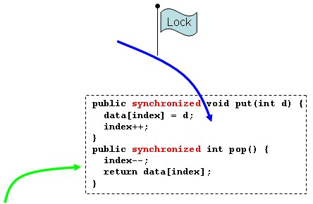
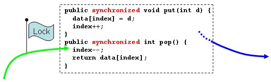
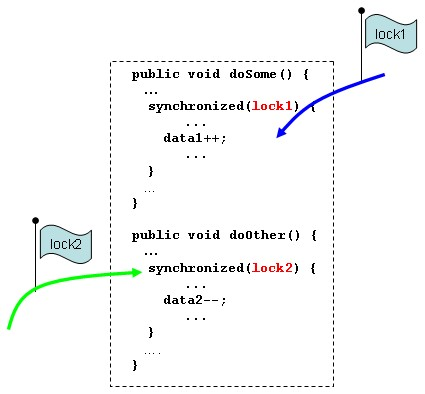

|
|
執行緒所操作的可執行（Runnable）物件，就相當於JVM中加裝的虛擬CPU所執行的程式碼。如果有兩個執行緒試圖執行的程式碼有所重疊，就要小心所重疊程式碼中共用的資料部份，以免共用存取時，發生資料的競速（Race condition）問題。 舉個例子來說，如果你開發一個簡單的Stack： public class Stack { private int[] data; private int index; public Stack(int capacity) { data = new int[capacity]; } public void put(int d) { data[index] = d; index++; } public int pop() { index--; return data[index]; } } index指向陣列中可以儲存資料的索引位置。這個程式使用在單執行緒時沒有問題，但如果使用在多執行緒下，例如某個可執行物件的run()中執行了put()方法： public class Some implements Runnable { private Stack stack; ... public void run() { .... stack.put(d); ... } } 假設index原先是2，當執行緒執行put()的第一行時，原本下一步該進行遞增index的動作（也就是變成3），不過此時正巧另一個執行緒執行了pop()： public class Other implements Runnable { private Stack stack; ... public void run() { .... int p = stack.pop(); ... } } 當執行緒執行了pop()的第一行遞減index後（變成1了），又回到先前執行緒的執行，此時又遞增了index（變成2了），所以這個時候，原本該遞增的index沒有遞增（原來應該變成3），為錯誤的結果。 錯 誤發生的原因在於，index為兩個執行緒共用，因而在某些時機點，發生競爭存取的情況，使得原來該在一個方法中完成的單元操作（陣列值指定後，索引也必 須被遞增，這兩個動作不可分割）被另一個執行緒介入。若要解決這個問題，可以將必須由一個執行緒完成的單元操作程式碼鎖定，完成操作後再開放給其它執行緒 存取共用的資料。 你可以使用synchronized關鍵字，標示執行緒所必須完成的單元操作程式碼範圍，例如最基本的，就是標示方法為synchronized： public class Stack { private int[] data; private int index; public Stack(int capacity) { data = new int[capacity]; } public synchronized void put(int d) { data[index] = d; index++; } public synchronized int pop() { index--; return data[index]; } } 每個物件內部都只會有一把鎖定旗標（Lock flag），執行緒要進入synchronized所標示的程式碼範圍，都必須取得某物件的鎖定旗標。以上例而言，在Stack的方法上標示synchronized（此時稱為synchronized method），表示進入synchronized時，必須取得Stack物件的鎖定旗標（對synchronized metho來說，預設就是取得目前物件的鎖定），若此時另一個執行緒也打算執行標示synchronized的方法，由於鎖定旗標已經被取走了，就只能等待。  只有當原先取得鎖定旗標的執行緒執行完syhchronized區域後將鎖定旗標歸還物件後，另一個執行緒才有可能取得鎖定旗標而執行所想要進入的synchronized區域。  所以若是先前的情況，有一個執行緒執行put()方法時，另一個執行緒就不能執行get()方法，所以put()方法內容一定會全執行完，也就不會發生先前競爭存取而引發的錯誤結果。 如果你確定共用存取的範圍，並不一定要將整個方法都標示為synchronized範圍，而可以如下（這是synchronized statement）： public void put(int d) { ... synchronized(this) { data[index] = d; index++; } ... } public int pop() { ... synchronized(this) { index--; return data[index]; } ... } 括號中指定鎖定旗標的物件來源。由於標示為synchronized範圍，一次只允許一個執行緒，所以其它的執行緒等待可能會引發效能問題，減少不必要的synchronized範圍，可以減少不必要的等待，降低效能負擔。 使用synchronized statement，可以作到更細部的控制，像是可以提供不同的物件作為鎖定旗標來源： public class Material { private int data1 = 0; private int data2 = 0; private Object lock1 = new Object(); private Object lock2 = new Object(); public void doSome() { ... synchronized(lock1) { ... data1++; ... } ... } public void doOther() { ... synchronized(lock2) { ... data2--; ... } ... } } 在這邊所要避免的是在doSome()中，同時被兩個以上的執行緒存取synchronized區塊，或是doOther ()中，同時被兩個以上的執行緒存取synchronized區塊，但data1與data2並不同時出現在兩個方法中，所以有個執行緒執行doSome ()而另一個執行緒執行doOther()時，並不會引發共用存取問題，此時分別提供不同的物件作為鎖定來源，就不會導致doSome()中 synchronize被一個執行緒存取時，doOther()中synchronized被另一個試圖存取時，所引發的等待延遲。  |